Приятно познакомиться! Меня зовут Айза. Уже 5 лет успешно готовлю выпускников к ОГЭ и ЕГЭ по математике. Дипломированный педагог: окончила Волгоградский государственный социально-педагогический университет. А также регулярно развиваю себя как репетитор и педагог(см. Раздел «Образование») Подготовлю тебя к экзаменам легко и эффективно Добро пожаловать🤍
